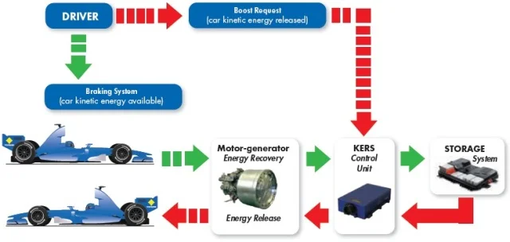

Introduction
This article is a thoroughly technical review of Energy Recovery Systems (ERS) in Formula 1 from the first KERS of 2009 to the hybrid power units seen to date on the track. It explores the engineering principles of the Motor Generator Unit-Kinetic (MGU-K) and Motor Generator Unit-Heat (MGU-H) and how both units integrate with turbocharged internal combustion engines and boast extensive efficiencies and optimizations. This extensive article has technical data, thermodynamic cycles and real world applications on the track, showing how the ERS systems are a mechanical engineering and electrical assembly and environmental automotive undertaking. Thus, this is the technology that Formula 1 takes to extremes of possibility; the developments here cross over to hybrid powertrains in cars everywhere, proving how motorsport is the final proving grounds for such advanced technologies.
From KERS to ERS
Today's F1 power units deliver around 870 horsepower, a significant improvement over the previous days through hybridisation (F1 Chronicle). Energy from around 160 hp is recovered from braking and exhaust heat (Grix Me). This is a significant improvement over the KERS which would recover energy mainly during braking. Energy Recovery Systems (ERS) are not just a regulatory shift since 2014, but a new approach to the recovery and re-use of wasted energy to boost powertrain performance.
ERS has revolutionized racing and car design. It has two main elements: the Motor Generator Unit-Kinetic (MGU-K) which captures kinetic energy during braking and the Motor Generator Unit-Heat (MGU-H), which will capture energy from the exhaust gases and the turbocharger (Flow Racers). These systems work together to enhance efficiency and performance by combining thermodynamic and electrical engineering. This progress also yields technology applicable to today's hybrid and electric cars.
KERS was the first big step forward in hybridisation for Formula 1 in 2009. It was originally a voluntary component, but was made mandatory in 2011 (Wikipedia). KERS stored kinetic energy when the vehicle was being slowed down and used it to generate electrical or mechanical power to boost acceleration at a later time (Baba Automobile). It generated roughly 60kW/80 hp, 400kJ/lap and around 6.67sec of peak usage. There was some temporary power increase in areas of overtaking and acceleration, but this was not a significant benefit (Mechanical ANITS, N.D.).
KERS was either battery electric or mechanical flywheel. High-voltage lithium-ion batteries, motor generators and control electronics were used in battery systems developed by McLaren/Mercedes, Renault and Ferrari. Ferrari also created the HY-KERS flywheel system that was 240 mm in diameter and weighed approximately 5 kg and rotated at speeds of up to 64,500 rpm (Baba Automobile).
Early KERS systems had problems with overheating, reliability and weight, though. Drivers also needed to adjust their driving techniques to ensure the effective use of energy. In spite of the drawbacks, KERS set the precedent for future ERS, the idea being to recover braking energy for a later use.

Hybrid V6 Turbo Era
The transition from such systems occurred in 2014 when Formula One regulations transitioned to require hybridised engines over gas systems. This meant transition from the previously dominant 2.4-litre V8 cars to a new push toward a 1.6-litre V6 turbocharged hybrid engine to maximise efficiency and performance while respecting trends on road cars offering sustainable performance goals more aligned with consumer interests (Wikipedia, 2008). For example, where previously V8 engines created upwards of 750 hp without hybrid advantages, the early V6s produced only roughly 710 hp early on - which meant hybridisation needed to make up the difference and prove F1 to be sustainably-minded (Wikipedia, 2008). In addition, the regulatory shift occurred at a timely trend when spectators lost interest in horsepower-based efforts - and ERS mandated energy recapturing through best efforts compared to KERS.
Overall, ERS recaptures energy three times better than KERS. Power output is boosted from KERS's maximum of 60 kw up to 120 kw (roughly 160 hp) through the MGU-H which recaptures heat generated through exhaust gases - all previously unrecoverable through mechanical force (Grix Me, 2025). In addition, the MGU-K is an extension of years of testing through KERS motor generators now integrated with additional forces into hybridised systems. Since 2014 this has been a required portion of every car on the grid.
KERS and ERS summary table
Table 1 summarises the key numerical differences between KERS and ERS in terms of maximum power and typical recoverable energy per lap described in this article.
| System | Maximum power output (kW) | Approximate energy recovered per lap (MJ) | Deployment limit per lap (MJ) |
|---|---|---|---|
| KERS | 60 | 0.4 | 0.4 |
| ERS | 120 | 3.0–4.0 | 4.0 |
ERS Components and Operation
Today, ERS regulation parameters established by the FIA regulate what's safe/permissible for recover efforts and competitive equalisation (FIA, 2025). For example, the MGU-K can recover up to two megajoules per lap; however, the MGU-H has no limit but often recovers between three and four per lap; teams can deploy a maximum of four megajoules per battery per lap (approximately 1.1 kWh). Only deployment is limited to 120 kw running voltage; typically running voltages exceed 600 volts depending on team regulations. This provides stability among competing teams while allowing for innovation where necessary.
Today there are four components for an ERS that essentially comprise an interconnected cohesive unit: MGU-K, MGU-H, Energy Store and Power Control Unit regulating parameters between each component/power source. The MGU-K is responsible for recovering kinetic energy from braking events that occur every lap. During deceleration, it functions as a generator redirecting the kinetic force from a crankshaft into its storage battery for additional kWh helpful when it's needed most. The MGU-K recaptures up to two megajoules per lap; there's conversion efficiency between 90-95% based on external forces; finally it can deliver instantaneous up to 120 kWh when called upon - and the functional response time offers no lag which negates turbo delay - which makes it great for overtaking or fuel saving efforts that support engine load.
However, the MGU-H is the most advanced component in any ERS today. It recaptures energy spent through exhaust speed through turbo mechanics; it also can work in reverse as an electric motor which essentially promotes quick speed without any lag time someone would expect trying to get up to speed through significant effort once out of less-than-ideal situations - or should a driver be caught without low gears trying to get out of tight situations as well. The best aspect about the MGU-H is that it recovers between three to four megajoules per lap - and there's no limit on recovery - and thus contributes more than 50% of energy compared to any other ERS component driving engine need; Flow Racers (2023) suggest that it operates consistently throughout each lap providing better performance/effectiveness.
The Energy Store is the central component that stores energy from all components together/for disbursement - and must be consistently charge/discharged within tight tolerances with thermal variables - which means real time feedback relevant to performance is critical to implementation purposes - great volume must be stored to provide a maximum four megajoule discharge available by regulations. It weighs between twenty-five and thirty-five kg and has approximate capacity of a simple 1.1 kWh battery after use; minimal thermal properties exist from any approach meaning aesthetic considerations for cooling benefits are vital for success.
Race Strategy and Thermal Limits
Such component dynamics change race strategy throughout since fuel allowances are severely limited throughout each lap (approximately one-hundred kilograms) meaning most power driver input comes from fuel saving options limiting excess power thresholds that could otherwise dominate speed efforts - therefore hybrid combinations allow Internal Combustion Engine reactions better suited for supplemental blips that allow increased speed without burning through fuel reserves over distance. For qualifying efforts teams typically implement high deployment maps that will allow for as fast output as possible within any lap since it's one more thing they can directly control about their efforts - however - as laps mount - systems must carefully balance recapturing/storing/expending based on limited challenges.
For example - with respect to timing of deployment - it might be good to save power for seven laps only to have excess delta thrust that can effectively power one overtake - but also defensively if it gets complacent only for someone else to get home under their rear wing needing fifty hp that bridge isn't generated without communication efforts based on saved megajoule gallons [as that's directly assigned]. Poor management creates problems; timing release windows yield improved versus ineffective results and those who push too hard get thrust off-course because they expect too much speed when they were forced to hold back due to expectations levels gained on resources saved.
Thermal limits play a crucial role here, too; if the Energy Store/battery/motor generator or MGU-H overheats due to excessive use efforts that are noble but ultimately meaningless due to safety concerns - component compensation will be extrapolated - and no real benefit can be gained during massive overtaking efforts.
Conclusion
In conclusion, Energy Recovery Systems represent Formula One's broader direction of hybridised efficient development since KERS systems were limited constructions established since 2009 - that exponentially sought new avenues over time that might have been established through small adjustments better linked as drivers got a break instead of unattainable maxed potential opportunities over time thus far - but today dominated by effective portions there's been a cumulative add-on as impact force over time seamlessly integrated between the Kinetic Recovery benefits associated with MGU-K and Thermal Recovery/Turbo Assist benefits captured through MGU-H - a full hybrid that powers the fastest ranks anywhere - not just race day but often consumer use travel as well.
References
- F1 Chronicle (2025) How much horsepower do F1 cars have?. [Online].
- FIA (2025) Formula 1 Technical Regulations: Power Unit. [Online].
- Grix Me (2025) Energy Recovery Systems in modern Formula 1. [Online].
- Wikipedia (2008) Kinetic Energy Recovery System. [Online].